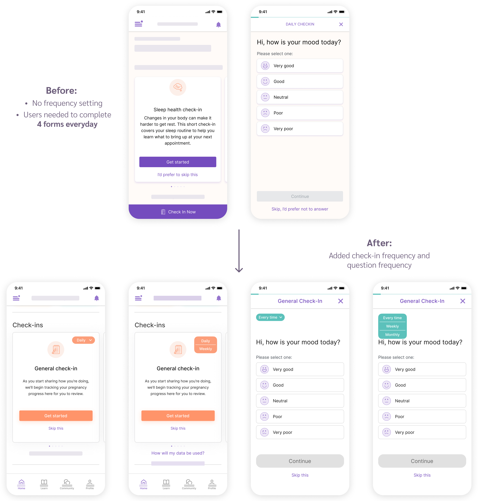

MyHealthyPregnancy Redesign
Timeline
10 weeks
Role
UI/UX designer
Tools
Figma, Maze
Organization
Naima Health
Overview
Problem
MyHealthyPregnancy is a pregnancy app that provides risk
identification during pregnancy. From past user research, the team
noticed that some users have provided valuable feedback on current
app issues and ideas of new features.
How can I conduct
a comprehensive user research on current users
and
iterate the design
based on their feedback?
Outcome
Combining original brand identity with new user feedback, I completely redesigned the homepage and added in brand new features.
End Result
Final Design Showcase
In 10 weeks, I redesigned features in the app by incorporating feedback from user research. The ultimate objective was to transform the app into an aesthetically delightful and effortlessly navigable pregnancy app.
01. Homepage
85% of survey responses mentioned they want more baby information on the homepage, such as a fruit size comparison and daily tips. More visuals can also make the user experience more pleasing.
02. Check-ins
The app used to have 6 different daily check-ins, which made the users not willing to fill them out. Now, users can customize the frequency of check-ins and questions based on personal needs.
03. Weight Tracker
50% of the surveyed users found the old weight tracker difficult to use. The new weight tracker allows users to easily edit information and view their weight trends.
04. Community Forum
Learning from other popular pregnancy apps, I created a supportive and informative space where users can connect, share experiences, and offer encouragement to one another.
Preparation
Competitor Analysis
Since I've never used a pregnancy app before, I decided to first analyze 3 most popular pregnancy apps to find out common features and design trends.
Among all features, size guide and social network feature seem to be the most common ones. This suggested that users of pregnancy apps usually need these two features, and we could consider adding them to our app.
Discovering Issues
User Research Insights
To get an understanding of how to improve the app from a current user's perspective, I conducted survey research on 150 users and 8 phone-call interviews. The process of getting these feedback was a challenge for me.
Old Method suggested by UX Researcher:
Cold call all 150 active users to ask general questions (e.g., areas of the app they like/dislike the most) and willingness to participate in interviews.
It's not working! After cold calling 60 users, only 2 picked up their phone and only 1 actually responded.
New Methods:
Online survey sent to 150 active users with a chance to win gift cards, which asked the same general questions. Received 87 responses!
15-min phone call interview on 8 active users: based on answers to the general questions, discussed further using open-ended questions to gain in-depth insights.
For suggestions mentioned by more than 40% users, I incorporated them into two personas:

In summary, the main user pain points can be summarized as:
1. On the home screen:
a. Not much information on baby's change
b. Too few visuals
c. Need a size guide
d. Need daily pregnancy tips
2. Check-ins are too frequent and are not customizable
3. Weight tracker is hard to use (only track once a week + can't
edit past information)
4. Want a community forum to chat with other users
Solution
Wireframes

Design Comparison
01. Home screen - more baby information, visuals, size guide, and daily tips

02. Check-ins are too frequent
03. Weight Tracker is hard to use

04. Want a community forum

Usability Testing
Testing Findings
After finishing the design, I conducted unmoderated usability testing on 6 active users using Maze. I provided them with 5 tasks, ranging from easy (Find your body's changes) to difficult (Comment on the latest discussion in the "October 2022 Birth" group in the community forum).
100%
of the users responded that they find the task easy to complete. The completion rate for each task were 100%, except for the last difficult task, which also has a high 80% rate. They expressed that they love the new variety of colors and the overall design.
However,
Some users mentioned changes that they would like to have on top of this redesign, such as information about how to set up an appointment and hotlines for doctors.
According to the feedback, it seemed like users were pretty satisfied with this new design, but there's still room to improve.
Reflection
One month before this internship started, I knew nothing about
UI/UX, not to mention how to use Figma. In four weeks, I managed to
self study UI design principles and UX design process from online
resources, and gradually became familiar with Figma.
It was a great experience to collaborate with data analyst and UX
researcher in the team. I got to know how to write interview script
so that users would be willing to provide honest feedback, and also
got the chance to analyze qualitative and quantitative data from
survey results. Being able to incorporate user feedback into design
and conduct unmoderated usability testing were brand new experiences
for me. The feeling of being connected with users through my design
was so exciting.
Since the company was very small (only 7 people), I also took on the
role of debugging the app and reviewing the logic document, which
spent a lot of time. Therefore, I wasn't able to come up with
multiple iterations for usability testing. In the future, I will try
to iterate as much as I can to create and test more design ideas.
Overall, I was very proud of the result of my first UX design
internship!😊